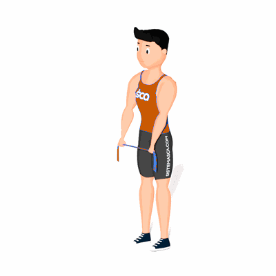

Abdução de Ombro com Faixa Elástica

O exercício tem como objetivo o fortalecimento dos abdutores do ombro, que auxilia na realização de outras atividades físicas e previne lesões.
Ficha Técnica
Tipo: Pilates
Grupo Muscular: Ombro
Aparelho: Nenhum
Músculos: Nenhum
Como realizar
- Em pé, segure uma faixa elástica;
- Estique o elástico até a largura dos ombros e posicione ele a frente da coxa;
- Estique mais o elástico e retorne para largura dos ombros, repita esse movimento ao mesmo tempo que desloca para cima os braços até altura do peito;
- Agora, retorne os braços a posição inicial repetindo os movimentos.
 RC STORE
RC STORE